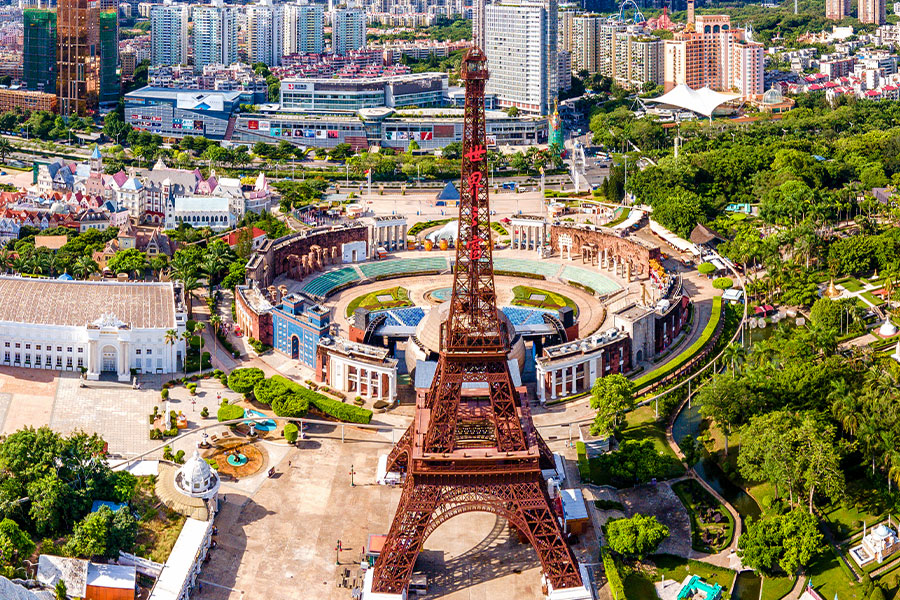

Window of the World

A theme park that lets you walk past the Eiffel Tower, Pyramids of Giza, Taj Mahal, and dozens of other world wonders in a single afternoon. Built at scaled-down sizes, it's one of the most popular ways to see "the world" without leaving Shenzhen.